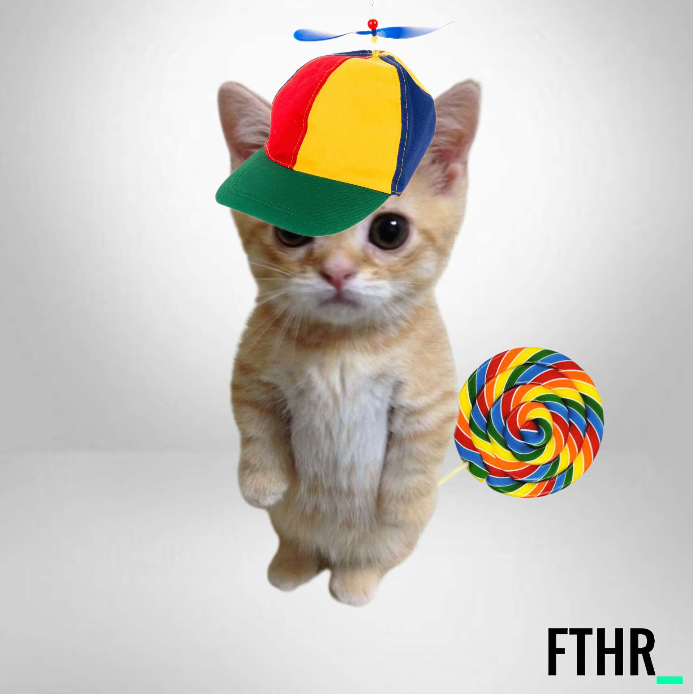

Founder / Head of Design
Haakon "Big Man"
Defining the design language and keeping FTHRClips focused on one promise: your clips stay yours.
Open-Source — Privacy-First — Maximum Performance
FTHRClips is still being built and is not publicly available yet. Source code will be available from day one of the alpha release. Join the Discord for build updates, early testing news, or email contact@fthrclips.com for questions.
Every feature earns its place. Nothing that isn't pulling weight.
No artificial caps. Pick the frame rate, resolution, and bit rate you actually want. The selected setup stays visible and reloads with the same values.
No "Premium" Subscription charging for basic Features, no viral feed, no notifications begging for engagement. Just a hotkey that saves your clip.
FTHR uses hardware encoding when your system supports it, keeping most compression work off the main CPU path. The current app can encode H.264, HEVC (H.265), or AV1 when the selected encoder and GPU support it.
No compatible hardware encoder? FTHR can fall back to software encoding for broader compatibility. Actual load still depends on your resolution, frame rate, codec, and hardware.
FTHR Clips Core works locally with no required account and no telemetry. The optional uploader is separate and only contacts the provider you choose after you enable it.
Choose Lustful, Catbox, or your own endpoint and get a shareable link when the upload finishes. Lustful uses a hardware-bound account and supports favorites so selected uploads can be kept.
The newer app stores video and audio separately instead of baking them together during capture. Game or system audio, mic, Discord, browser, and other app sources can stay on independent tracks, be mixed non-destructively, and are merged with the video when you export.
Change colors and icons or add any sound you like. For example: colors like here.
Drag a clip straight out of FTHR and drop it anywhere. Built-in compression handles Discord's upload limit automatically, no manual re-encoding, no third-party tools.
Turn the captured moment into the exact clip you want. The editor keeps its tools close at hand while video and audio remain separate until the final export.
Let auto-detect find your old clips or point FTHR at any folder and it pulls in clips from other clipping software automatically.
A simplified, current look at the replay loop. Choose a platform to see the capture path and the qualification notes that apply.
Windows Graphics Capture is preferred for the selected window or monitor, with hardware-backed replay encoding when the selected device supports it.
Windows Graphics Capture is the normal path for the window or monitor you select. If its privacy border cannot be suppressed or WGC is unavailable, the engine can fall back to DXGI Output Duplication.
For known anti-cheat titles, focus-gated monitor capture keeps the selected game capturable without quietly buffering the whole desktop after an alt-tab. Frames are accepted at your chosen capture rate and excess arrivals are skipped before encoding.
Raw gameplay would consume gigabytes over the replay window, so video is encoded continuously before it enters the ring. The current app supports H.264, HEVC (H.265), and AV1 when the selected encoder and hardware pass capability discovery.
The qualified Windows core path keeps capture and hardware encoding on the same adapter. Hybrid and cross-adapter combinations remain limited for the alpha build.
Video and audio are captured on their own timed paths. The Windows engine can keep the desktop mix, microphone, and selected application sources as independent tracks instead of baking them together during capture.
That gives the editor room to adjust the mix later. Windows 11 per-app stems are code-integrated, but their full qualification is still pending a physical Windows 11 run.
Pressing the hotkey snapshots the requested interval from the encoded replay ring while capture continues in the background.
On the current Windows path, the saved video is muxed with the selected audio tracks and an adjacent audio manifest is published transactionally. There is no full video re-encode just to save the replay.
Windows 10 x64 with same-adapter NVIDIA hardware is physically verified for the core replay, audio, and save workflows. AMD and Intel paths are code-integrated and automated-tested but hardware-unverified; Windows 11 per-app stems and official borderless capture still need a physical qualification run.
Linux is compositor-dependent: the alpha build needs one of its supported Wayland capture protocols and reports a bounded failure when neither is available.
The Linux engine tries wlr-screencopy first, then ext-image-copy-capture. Which path works depends on the Wayland compositor: Hyprland and other wlroots compositors target the first protocol, while KDE Plasma 6+ and GNOME 46+ may expose the second.
X11 capture is disabled for the alpha build. If the compositor exposes neither supported protocol, FTHR stops cleanly instead of silently recording an empty or unsafe desktop.
Frames are rate-limited, encoded continuously, and pushed into a bounded replay ring. Linux uses hardware encoders when the machine exposes a working path; reviewed FFmpeg software candidates can also be selected when capability discovery validates them.
H.264, HEVC, and AV1 are possible codec choices, but the exact list depends on the encoder and libraries available on that Linux system.
Desktop audio opens through the PulseAudio-compatible path, which can be backed by PipeWire. Audio stays timed against the replay, and multiband sources can be mixed after the video save.
Linux hotkeys do not read global input directly. The compositor sends a save command to FTHR's owner-only Unix socket, so the workflow does not require root or membership in the input group.
The compositor-triggered save snapshots the requested interval from the encoded ring while the capture loop keeps running.
FTHR then combines the captured video with the selected audio in an MP4. Unsupported Wayland sessions fail with a bounded recovery path rather than publishing a misleading clip.
Linux engine, IPC, audio-open, and bounded-failure behavior are verified in Ubuntu 24.04 on WSL2. Visible capture on a real Wayland desktop has not yet been verified on a representative compositor, so Linux should be treated as experimental rather than broadly supported.
No collection. No telemetry. Network access stays under your control.
FTHR collects your clips for you, not what you do with them. There is no analytics pipeline and no telemetry. Your captures stay in the folder you chose unless you explicitly send one through the optional uploader.
These are core commitments: no data collection, no telemetry, no required account, and no upload without your explicit choice. Your privacy is no one's currency.
Where things are, and where they're going.